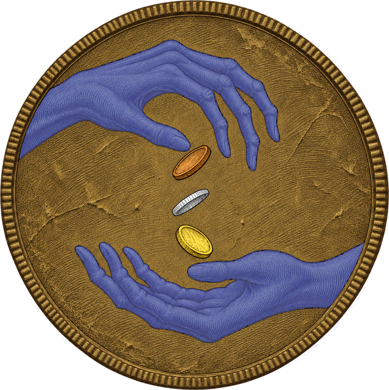

An unidentified seal, struck on a large coin worn on a chain by a figure aboard the second hostile vessel, hooded throughout, in the engagement on the Cairn approach (Case #WM-002), as described by the surviving complement of Bellwether Crow. The figure gave orders to that vessel's crew and was lost with it to a color pool. The seal is distinct from the crossbones colors both hostile vessels flew.
Several survivors saw the seal at close quarters while the second hostile vessel lay grappled to Crow, before Crew Lead Dashforest's party cut her loose. The figure wore it in plain view; survivors could not give its kind. The face shows two slender, long-fingered hands, one above the other, the upper hand letting three coins fall into the open palm of the lower.
At debrief, one survivor's memory of the coin's face was drawn out by divination, and the rendering below was made from it. The diviner attests the rendering true to the survivor's memory. A cross-reference was submitted against the Fleet's registry of vessel, house and guild marks. No match returned.

Open. No further occurrences of this marking have been documented in Fleet records at this clearance. Inquiry continues under the escort order against the vessel of "Saltjaw", which acted with the second hostile vessel (Case #SA-005).